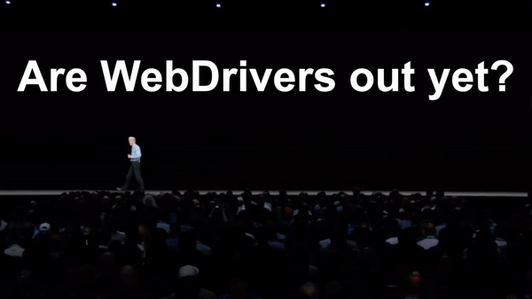

# Introdução
É aquela época do ano de novo, uma nova versão do macOS foi lançada e aquela pergunta centenária será feita novamente:
Quais GPUs são suportadas pelo macOS 11 Big Sur?
Bem, você veio ao lugar certo. Este guia dará uma passada rápida na situação e depois entrará em detalhes sobre quais GPUs são recomendadas.
# Um Lembrete Rápido Sobre Nvidia e WebDrivers

No momento da escrita deste guia, já se passou um ciclo completo de lançamento do macOS sem que os drivers oficiais da Nvidia para as GPUs Maxwell, Pascal e Turing fossem lançados. Isso significa que os donos dessas GPUs não têm suporte no macOS 10.14 Mojave, 10.15 Catalina e 11 Big Sur, ficando presos no macOS 10.13 High Sierra. Mas de quem é a culpa? Bom, são duas empresas gigantes e egoístas que se recusam a trabalharem juntas, então a culpa pode ser de ambas. Além disso, lembre-se de que os WebDrivers ainda possuem um problema de vazamento de VRAM que não foi resolvido, então a teoria do porquê a Apple se recusa a usar os drivers da Nvidia no macOS talvez seja consequência da forma como a Nvidia se recusa a abrir o código da pilha de drivers. Ou você acha que é coincidência que tanto a AMD quanto a Intel tenham aberto o código para seus drivers? Bom, de qualquer forma, isso não muda o fato de que ainda não há suporte.
Usuários de GPUs Kepler podem ficar tranquilos, no entanto, pois estas GPUs utilizam os drivers nativos da Apple.
E para aqueles que queiram ler mais sobre isso: Quando os WebDrivers da Nvidia serão lançados para o macOS 10.14 Mojave (opens new window) (em inglês).
É uma ótima leitura, já que mostra como nem mesmo gerentes sênior têm uma resposta boa para seus clientes.
# Então, se minha GPU possui suporte nativo, por que eu preciso do Lilu e do WhateverGreen?
Essa é uma pergunta que aparece com bastante frequência na comunidade Hackintosh, e por um bom motivo, já que é estranho o fato dessas GPUs funcionarem sem modificações em um Mac, mas não em um hackintosh. Bom, o motivo para isso é que PCs e Macs possuem conexões internas diferentes e por causa disso, os leiautes da ACPI de um PC não funcionam bem com Macs em cenários diferentes. Para contornar isso, é preciso usar a kext WhateverGreen (opens new window) e a kext companheira Lilu (opens new window) para corrigir diferentes partes do hackintosh, como renomear dispositivos, auxiliar com conexões de framebuffer, corrigir conectores de áudio, permitir modificar aty_config, aty_properties, cail_properties por meio da ACPI e muito mais. Com tamanha quantidade de recursos e por ser desenvolvida por alguém que sabe o que está fazendo, não há motivo para não usá-las.
# Então quais são as minhas opções?
Existem duas opções de GPUs dedicadas para escolher, tanto AMD quanto Nvidia (sim, ainda existem GPUs Nvidia com suporte nativo no macOS 10.15 Catalina), por isso cobriremos quais GPUs são compatíveis e quais recursos/falhas elas têm.
Coisas para se lembrar:
- O macOS não oferece suporte para SLI, Crossfire ou GPUs com múltiplos núcleos principais, como a Radeon Pro Duo. Isso talvez mude com o lançamento da Radeon Pro Vega II Duo no Mac Pro.
- Fazer o áudio funcionar na HDMI/DisplayPort pode exigir um esforço maior com a AppleALC.kext e com algumas outras alterações no IOREG.
- Overclock de GPU é limitado a GPUs Vega 10 com o PyVega (opens new window).
- Usar GPUs suportadas junto com GPUs não suportadas pode trazer consequências estranhas, já que GPUs não suportadas utilizam os drivers VESA, que possuem problemas capazes de quebrar tanto a suspensão quanto outras funções do macOS. Por favor, refira-se ao guia sobre como desativar GPUs não suportadas (opens new window) para obter mais informações.
# Posso usar uma GPU não suportada no meu hack?
Algo para se ter em mente ao usar GPUs não suportadas no macOS é que elas usarão os drivers VESA quando nenhum driver apropriado estiver presente. Esses são drivers muito simples, baseados em CPU, usados somente como paliativo até que se instale os drivers corretos. Muitas funções do macOS quebram ao executar o sistema dessa forma, incluindo a suspensão e a estabilidade geral. Como essas GPUs não possuem drivers nem mesmo fora da Apple, é necessário encontrar uma forma de impedir que as GPUs não suportadas sejam reconhecidas no macOS.
Então, o que fazer? Ficamos felizes por perguntar. Basta seguir o guia sobre como desativar GPUs não suportadas no macOS (opens new window). Assim, até mesmo você pode experimentar as glórias do macOS 10.14 Mojave e além!
Mas é possível renderizar o macOS na GPU integrada e usar as saídas de vídeo da minha GPU não suportada?
Infelizmente não. E o motivo para isso é bastante similar a como a tecnologia Optimus da Nvidia funciona. Primeiro, seria necessário encontrar uma forma de pegar/codificar o sinal da GPU integrada, enviá-lo para a GPU dedicada e então fazer com que essa GPU decodifique-o para exibí-lo. Mas existe um pequeno problema: para decodificar um sinal de vídeo, seria necessário ter aceleração gráfica apropriada, coisa que a GPU não suportada já não possui. Enfim, será necessário utilizar as saídas de vídeo da placa-mãe de qualquer maneira.
GPUs AMD ⟶